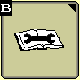

Calibrage de vibration du capteur de débit massique
Assurez-vous que l'unité de récolte soit bien fixée et en position de travail.
Sélectionnez le type de récolte concernée.
Note : Le calibrage est enregistré après chaque récolte. Par conséquent, la procédure doit être répétée pour chaque type de récolte.
- Sur page d'accueil de la console, appuyez sur B. Appuyez sur G.
 Sélectionnez Vibration du débit massique dans la liste des calibrages.Appuyez sur Accepter.
Sélectionnez Vibration du débit massique dans la liste des calibrages.Appuyez sur Accepter.
Suivez les instructions du calibrage :
Assurez-vous que l'unité de récolte ne repose pas sur le sol et que la trémie à grains soit vide.
Enclenchez l'unité de récolte et les organes de battage.
Augmentez le régime moteur au maximum à vide.